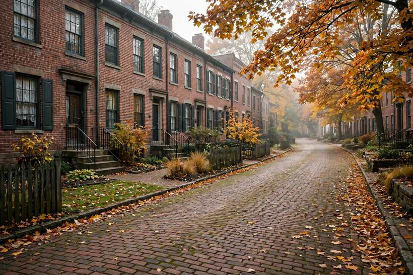
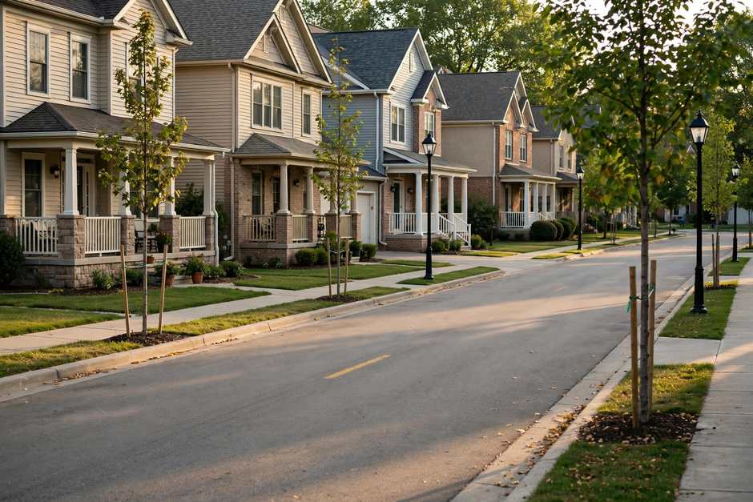
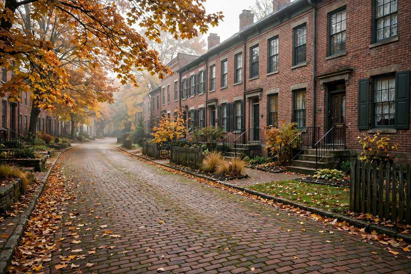

Former Village, Belleville, Illinois
Plumbing in the West Belleville Historic District
Hinkle Plumbing Company serves the Town of West Belleville Historic District from 1610 W Main St, Belleville, IL 62220. This former independent village, platted in the 1830s and merged with Belleville in 1882, holds German street houses along West Main Street, with Richland Creek at its eastern edge. Call (618) 677-6556 to discuss a problem.
Call (618) 677-6556Monday through Friday, 8:00 AM to 4:30 PMNational Register listing 2014; village merged 1882
A Former Independent Village
German street houses beside Richland Creek
West Belleville was platted in the 1830s, established as a village in 1852, and merged with Belleville in 1882. The National Register district, listed in 2014, covers a corridor narrower than the former village, from Sixth Street to 16th Street along West Main Street. German street houses from the 1830s to the 1870s line the West Main Street corridor, built by German immigrants, with mixed commercial frontage that once held dry goods stores, groceries, tailors, saloons, and blacksmiths. Coal mining was the main occupation, and brewery remnants survive from Von Schrader's Distillery and the Western Brewery, later the Stag Brewery. Pipe work is expect-and-check: galvanized supply, cast-iron drains, and clay laterals form the oldest cohort, with a possible lead service line. Richland Creek forms the eastern edge, so basement damp and water-table questions are raised generally, never as address-level claims.
Explore West Belleville Historic District services
Hinkle Plumbing CompanyGerman street houses along the West Main Street corridor in West Belleville.
Services for This District
Plumbing services for the creek-edge corridor
Services below are scoped against the oldest pipe cohort, creek-edge groundwater questions, and mixed building uses along the corridor.
01
Sewer Line Repair
Clay laterals in the oldest cohort fail at joints, where roots enter and offsets form. Spot repairs suit isolated defects, and camera footage shows whether a defect sits on the owner side or beyond the property line.
02Sump Pump
Creek-edge blocks carry a general flood and water-table expect-and-check pattern, so sump pumps matter where basements take groundwater. Placement, backup power, and discharge routing are covered, with current City requirements checked for the property.
03Basement Plumbing
Basement bathrooms, floor drains, ejectors, and slab leaks form one cluster of work in older homes. Each basement question is diagnosed on its own, since combined-sewer surcharge and creek-adjacent groundwater act differently.
04Sewer Camera Inspection
Camera footage records joints, roots, bellies, and breaks in clay laterals, and establishes the position of a defect relative to the property line. That position matters for the City Sewer Lateral Repair Program; check current City program details.
05Drain Cleaning
Cast-iron drains and clay laterals collect scale, grease, and roots. Clearing is matched to the material, and a clog that returns points toward a camera pass rather than repeated clearing.
06Leak Detection
Hidden leaks in street houses hide behind finished walls and converted layouts. Meter checks, acoustic listening, and pressure testing narrow the search before surfaces are opened.
District Realities
A creek boundary, a corridor, and a mixed past
A creek boundary, an 1830s street-house corridor, and a mixed commercial and industrial past shape plumbing questions here.
The former town across the creek
West Belleville spent 30 years as an independent municipality, with public squares at West Main Street and 11th Street and a street grid divided from the city by Richland Creek. The former village stretched about one mile square along Main Street, from the creek to about 22nd Street, while the National Register corridor runs from Sixth Street to 16th Street. How we help: An address is placed against the corridor and the former village extent separately, so the district boundary is not confused with the old village boundary.
Street houses meet the creek edge
German street houses from the 1830s to the 1870s stand along the West Main corridor, and Richland Creek forms the eastern edge. Creek-adjacent blocks carry a general flood, water-table, and basement-damp expect-and-check pattern. The creek drains 246 square miles as a tributary to the Kaskaskia River, and flash flooding on July 25-28, 2022 led to disaster declaration DR-4676. How we help: Flood and water-table questions are raised generally for creek-edge blocks, and sump pump and basement discussions follow the conditions found at each address, not assumptions from the street label.
Brewery and coal fabric on residential streets
Stag Brewery remnants and a coal-mining past interrupt the residential corridor with mixed commercial and industrial fabric. A backup or pressure complaint on such a street needs a building-use check before a domestic cause is assumed, and whether any parcel sits over old mine workings is a mine-map question, not a page claim. How we help: Building use and history are checked first, and diagnosis follows the building rather than the street label, so commercial and industrial fabric is not mistaken for a domestic cause.
Signs to Note
Signs that point toward creek-edge conditions
A small visible symptom can point to a bigger pattern.
Damp floors or walls after rain
Creek-edge blocks and combined-sewer surcharge both push water toward basements. Damp that follows rain points toward groundwater or sewer surcharge, and the two are separated by inspection.
Backups during heavy rain
Belleville's mixed sewer system includes a combined-sewer historic core, and heavy rain can surcharge lines into basements. Backwater valves are permissive under the code text read, not mandatory, and options are discussed per address.
Pressure changes across fixtures
Galvanized runs and old services restrict flow unevenly. Pressure readings across fixtures show whether the restriction sits in a branch, the service line, or the main supply.
Cracks or shifts near buried lines
Ground movement stresses buried lines, and coal mining is part of this area's documented past. Cracks, shifts, or repeated breaks call for a camera pass and a mine-map check, not assumption.
Scope and Cost
What shapes the cost of a job here
Creek-edge conditions, pipe age, and building use set the scope of work in this district.
Diagnosis first
Camera footage, pressure readings, and building-use checks establish what is failing. Findings are discussed by phone during office hours, and scope follows evidence rather than assumption.
Repair in place
Isolated defects in sound lines are handled as spot repairs. Creek-edge water-table questions and access along the corridor are part of the scope discussion for each address.
Planned replacement
Lines at end of life are scoped as replacements, with material, depth, permits, and restoration discussed together. Call (618) 677-6556 to discuss a specific address.
District Anchors
Corridor streets, squares, and the creek edge
Corridor streets, public squares, and the creek edge below come from the district record.
West Main Street Corridor, Sixth to 16th Street
The National Register corridor runs along West Main Street from Sixth Street to 16th Street, lined mainly with German street houses from the 1830s to the 1870s.
Public Squares at West Main and 11th Street
The former village held public squares at West Main Street and 11th Street. The squares mark the civic center of the independent town and the center of the walking tour.
Tour Start, 1106 W Main Street
A walking tour of the former village starts at 1106 W Main Street and centers on West Main Street and 11th Street, near the former village squares.
Richland Creek Eastern Edge
Richland Creek forms the eastern edge of the district and divides the street grid from the rest of the city. Creek-adjacent blocks carry general flood and water-table questions.
Coverage
Where this page applies
This page covers the Town of West Belleville Historic District and West Belleville as one area in Belleville, Illinois. The National Register corridor is narrower than the former village extent, and an address is confirmed against the district record rather than the old village boundary. Work is discussed by phone during office hours, and no ZIP code is used here as a service boundary.
Streets and landmarks: West Main Street, Sixth Street, 11th Street, 16th Street, 22nd Street, Richland Creek
Check my address →
1234
Office: 1610 W Main St, Belleville, IL 62220Call (618) 677-6556 Monday through Friday, 8:00 AM to 4:30 PM. Closed Saturday and Sunday.
Reviews from Google
What Customers Say on Google
★★★★★
“Very prompt and responsive, the worker was friendly and informative! Will use this company again!”
★★★★★
“Don did an outstanding job for me when I needed him and highly recommend his business”
★★★★★
“Rated 5.0 out of 5 across 3 Google reviews, all five stars.”
Nearby Areas
Other documented Belleville areas

Old Belleville Historic District
The east-side historic core with German street houses and row houses from 1830 to 1900 on narrow lots.
Hexenbuckel Historic District
The north-side pre-Civil War district on the North Illinois Street hump, with a local designation from 1991.
Reunion
A traditional neighborhood design subdivision with 2000s-era homes and a Planned Unit Development origin.Questions
Questions about plumbing in this district
Our team can help if your question is not answered here.
Call (618) 677-6556Is this district subject to local historic review rules?
No local historic district was established for West Belleville in the sources read, and National Register listing alone imposes no restriction of that kind. Regular housing codes still apply, and permit rules are the same as elsewhere in the city. The distinction matters: listing recognizes historic character without adding a local review layer.
Does Richland Creek flooding affect plumbing here?
Richland Creek forms the district's eastern edge, and creek-adjacent blocks carry a general flood and water-table expect-and-check pattern. Flash flooding on July 25-28, 2022 led to federal disaster declaration DR-4676 on October 14, 2022, with countywide figures only. No address-level flood claim is made here; flood status for a specific address is a FEMA map question.
Do plumbing jobs here need a permit?
The City of Belleville requires a permit before plumbing work begins (§152.05(A)); direct replacement of a toilet, sink, faucet, or other appliance is exempt, except hot water heaters require an electrical or gas permit (§152.05(B)(3)). Permit questions for a specific job are discussed by phone during office hours.
Who owns the sewer lateral?
The owner owns the sewer lateral from the building to the city main, including the portion under streets, under City code §50.023. The City operates a Sewer Lateral Repair Program covering the portion beyond the property line; readers should check current City program details for terms. A camera inspection establishes where a defect sits relative to the property line.
Mon–Fri 8:00 AM–4:30 PM
Discuss a plumbing problem in West Belleville
Call Hinkle Plumbing Company at (618) 677-6556 Monday through Friday, 8:00 AM to 4:30 PM. Closed Saturday and Sunday. Describe the problem, the age of the house where that detail is available, and what has changed, and the scope factors will be discussed from there.

Talk with the local team
Contact Hinkle Plumbing Company
Call (618) 677-6556 during office hours, Monday through Friday, 8:00 AM to 4:30 PM. Tell us what is happening and we will talk through the next step.